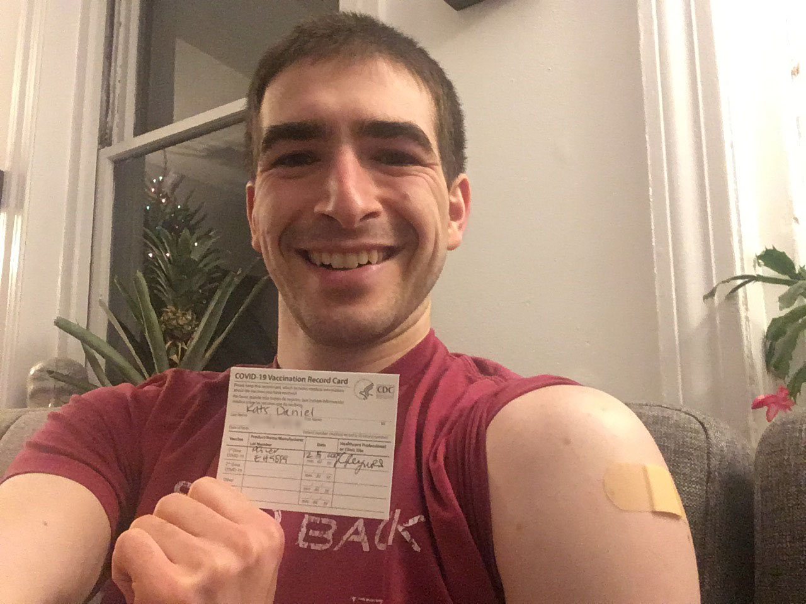

Vaccines
As a Pediatrician, one of the topics I spend the most time talking and thinking about is vaccines. There are many, many opinions about them online, but below are amazing high-quality sources that are where I look for any questions I have. If you ever have questions or concerns about vaccines, please talk to your doctor.
For the record, I am fully vaccinated, because I would never recommend anything that I am not willing to do myself. I also have not ever received, do not currently receive, and will not ever accept any money or other compensation from any pharmaceutical/vaccine companies.
- CDC Vaccine Information: Birth to 6 years | 7 to 18 years
- HealthyChildren.org by the American Academy of Pediatrics
Here's glossary of vaccine-related terms created by Boston University's Epidemiology COVID-19 Response Corps (click to enlarge):

Types of Vaccines
Here's an excellent graphic created by Boston University's Epidemiology COVID-19 Response Corps (click to enlarge):

COVID-19 (the SARS-CoV-2 virus) Vaccine
- Frequently Asked Questions about COVID-19 Vaccination (U.S. Centers for Disease Control and Prevention)
- Myths and Facts about COVID-19 Vaccines (U.S. Centers for Disease Control and Prevention)
- COVID-19 Vaccine: Frequently Asked Questions (American Academy of Pediatrics)
- COVID-19 vaccine frequently asked questions (Mass.gov)
- Vaccine FAQs (Boston Public Health Commission)
The COVID-19/SARS-CoV-2 vaccines are an incredibly safe and effective way to prevent COVID-19. I was fortunate to be able to get the Pfizer/BioNTech vaccine shortly after it was approved, and it was an amazing experience. Here's my personal experience with the vaccine:
|
I received my first dose of the Pfizer/BioNTech vaccine on 12/18/2020 at 5pm. The atmosphere in the vaccine clinic was basically giddy. I was probably the nurse's 100th shot of the day, but she greeted me with, "Isn't this exciting??" Everyone was smiling, laughing, and excited for protecting ourselves against this virus. The nurse giving me the shot wasn't scheduled to get one herself, yet, because she was in a later wave. This felt a bit weird that she was doing such important work protecting others without being able to protect herself, but I'm proud to call such an honest and selfless person one of my colleagues Here's how I felt in the days after the vaccine: Day 0 (the day I got the shot): I felt absolutely nothing other than hope. No soreness, no pain, just joy. Day 1: I woke up with mild shoulder soreness, just like with any other shot. I felt totally normal otherwise. Day 2: I had some resolving mild shoulder soreness, but it was barely noticeable. And no other symptoms. Woo! Day 3: Totally back to baseline! I received my second dose of the Pfizer/BioNTech vaccine on 1/8/2021 at 8am (21 days/3 weeks after the first shot). It was a much less emotional experience than the first time…until the nurse said "You're fully vaccinated!" 
Here's how I felt in the days after the second dose: Day 0 (the day I got the shot): I gradually developed increasing soreness at the injection site throughout the day, but it was never more than a mild pain that was only noticeable when I pushed on the injection site or stretched my shoulder. I stayed hydrated during the day, but I did not take any acetaminophen or ibuprofen. Day 1: I woke up with worse pain around the injection site than when I went to bed, but still mild and not limiting me in any way. Other than that, feeling great! Day 2: My shoulder soreness was basically non-existent when I woke up. I went on a 10 mile hike and felt great! |

|